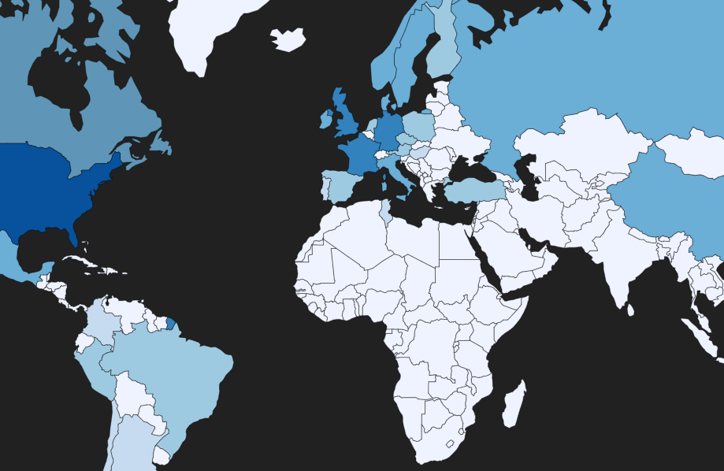
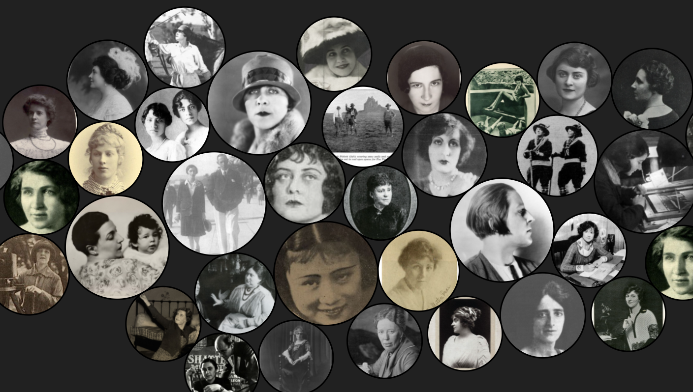
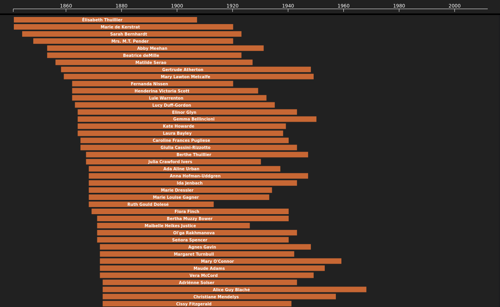
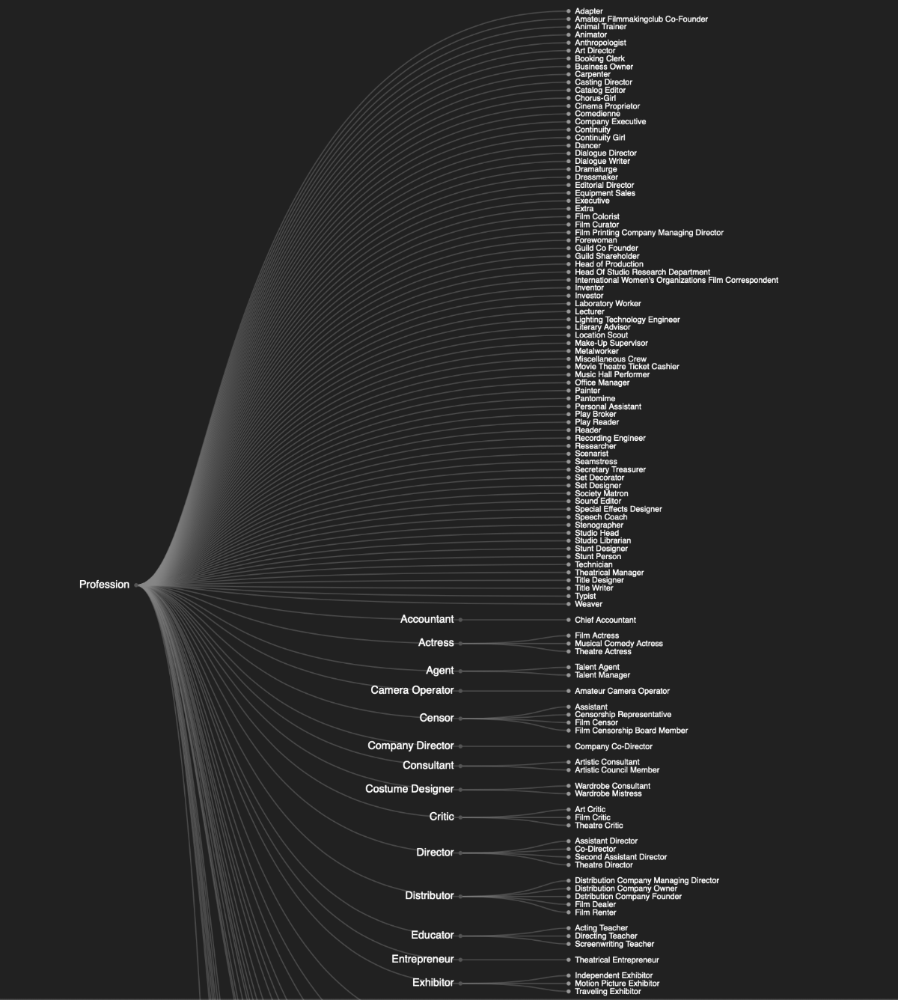

Pioneer of the Day
Usually this window shows a pioneer who was born on today's date.
Unfortunately, there seems to be no such woman in the WFPP
database.
If you know of a pioneer to whom this applies, please support the
project by expanding the data.

MAP
Women were working in film production all over the world. Many
pioneers had various jobs in multiple countries. For an interactive
overview of where the women were involved click the button below.

CLUSTER
Women held a great number of various positions in early film
industries. For an overview of the numerous professions and the
subcategories explore the cluster visualization. It also shows in
which country the many women have worked.

TIMELINE
Want to find out when the pioneers lived? Just click the button below
for an interactive timeline. The timeline also allows you to add
custom events in order to put the individual biographies into a
historical context.

DENDROGRAM
Women have contributed a lot to the film industry since the beginning.
This dendrogram displays the numerous profession they hold in addition
to the many subcategories. For an overview click the button.